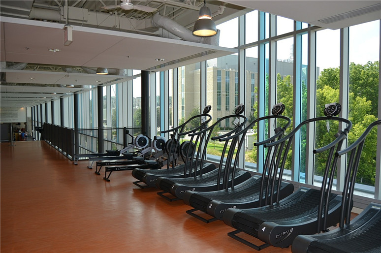

The XL FitnessAI Overseer
Every idea explored. Every concept explained simply with real examples. Every technical decision justified. This is the complete guide to how we build an AI that watches the gym floor and knows exactly what every member is doing.
What Are We Building?
Imagine a person standing in the gym, watching every machine, knowing every member by face, counting every rep, reading every weight — all at once, all the time, never getting tired, never missing anything. That's the AI Overseer.
The goal is simple to say but hard to build: zero friction data capture. A member walks in, sits at a machine, and trains. The AI does everything else. It knows who they are. It knows what machine they're at. It reads the weight. It counts the reps. It scores the form. It logs everything to a database. The member never touches a tablet.
This isn't science fiction — it's a combination of four proven AI technologies (YOLO, DeepSORT, MoveNet, InsightFace) that already exist and work. We're combining them in a way that's never been done in a gym context.
The system should feel like magic to the member. They just train. Behind the scenes, three cameras and four AI models are working in parallel to capture a complete, verified record of their session — better data than any personal trainer could manually collect.

Verified Session Data
Every set, every rep, every weight — AI-verified. Not self-reported. Not estimated. Actually measured by computer vision.
Tamper-Proof Leaderboard
Because data is captured automatically, the leaderboard can't be gamed. Every number is real. Trust is restored.
Progress Tracking
Members see their strength progress over weeks and months. Volume, weight progression, and form improvement — all tracked.
Coaching Intelligence
Coaches get real data. They can see which members are progressing, who's plateauing, and who needs form correction.
The Problem We're Solving
Before we explain any technology, we need to understand the problem deeply. Because if you don't understand the problem, the solution looks like overkill.
Most gyms have a data problem. Members self-report their workouts, and the data is unreliable — people round up, forget, or simply don't log at all. Studies show ~40% of manually logged gym data contains errors. You cannot build a coaching product, a leaderboard, or a personalisation engine on unreliable data.
Member finishes a set. Tired, sweaty, mid-workout. The last thing they want is to pick up a tablet.
They type in their reps. Did they do 10 or 12? They round up. Did they use 80kg or 85kg? They guess. Data is already wrong.
Leaderboard fills with fake numbers. Everyone knows it. Trust collapses. Members stop caring. The product fails.
Member sits at machine. Camera detects them. Face ID confirms who they are. Weight stack is read. Session opens automatically.
They train. AI watches every rep. Counts them. Scores the form. Detects rest periods. No tablet interaction required.
Data is verified and published. Every number is AI-verified. Leaderboard is tamper-proof. Coaches have real data to work with.
How the System Works
The system has five layers. Each layer answers one question. Together they answer the only question that matters: "Who is at this machine, what are they lifting, and how many reps have they done?"
Each stage has a specific job. Together they take a raw camera frame and turn it into a verified workout record in under 50 milliseconds.
| Camera | Position | Job | Why This Position? |
|---|---|---|---|
| Camera 1 | Overhead fisheye, ceiling | Person detection + tracking + zone matching | Overhead angle sees all machines simultaneously. One camera covers 4–6 machines. |
| Camera 2 | Side angle, column/wall | Pose estimation + rep counting | Side angle shows the full range of motion — the elbow bend, the extension. You can't count reps from above. |
| Camera 3 | Facing weight stack | Weight detection | Direct view of the weight plates and selector pin. No ambiguity about which weight is selected. |
What is a Bounding Box?
Before the AI can do anything — count reps, identify faces, read weights — it first needs to know where people are in the camera image. A bounding box is the answer to that question.
A bounding box is just a rectangle drawn around a person. That's it. It's defined by four numbers: the x position (left edge), y position (top edge), width, and height — all measured in pixels from the top-left corner of the image.
Look at the image on the right. Every person has a green rectangle around them and a yellow number. That green rectangle is the bounding box. That yellow number is the tracking ID. This is exactly what our system produces — 30 times per second, for every person on the gym floor.
Every other AI layer depends on bounding boxes. Face ID crops the face from the bounding box. Pose estimation runs inside the bounding box. Zone matching uses the bounding box centre point. Get detection right and everything else follows.
A Bounding Box is Just 4 Numbers
# This is everything YOLO outputs for one detected person
{
"bbox": [
340, # x — pixels from left edge
210, # y — pixels from top edge
80, # width — how wide in pixels
140 # height — how tall in pixels
],
"confidence": 0.94, # 94% sure this is a person
"class": "person"
}

This is exactly what our system produces — every person detected, numbered, and tracked in real time. The same technology used in security systems worldwide.
Interactive Demo — Click to Place Detections

# Click canvas to detect a person detections = []
| Method | Time Per Frame | Info Quality | Our Choice? |
|---|---|---|---|
| Bounding Box (YOLO) | ~15ms | Good — rectangle around person | ✓ Yes |
| Pixel Segmentation | ~150ms+ | Perfect — exact outline | ✗ Too slow |
| Simple Motion Detection | ~2ms | Poor — just "something moved" | ✗ Not enough info |
YOLO — You Only Look Once
YOLO is the AI model that scans the camera image and finds every person in it. It does this in about 15 milliseconds — fast enough to run 30 times per second on every camera.
The name "You Only Look Once" refers to how it works. Older detection systems would scan the image multiple times, looking at different regions. YOLO looks at the entire image once, in a single pass through the neural network, and outputs all detections simultaneously. This is why it's so fast.
YOLO divides the image into a grid. For each grid cell, it predicts: "Is there a person here? If so, where exactly, and how confident am I?" The predictions from all grid cells are combined and filtered to produce the final list of bounding boxes.
YOLOv8 Nano (the smallest version) runs at 30fps on a Mac Mini M4 Pro with 15ms latency. It's pre-trained on millions of images including people in gyms, sports, and indoor environments. It works out of the box — no custom training needed for basic detection.
# Install and run YOLO in 5 lines
pip install ultralytics
from ultralytics import YOLO
model = YOLO('yolov8n.pt') # nano = fastest
results = model(frame) # run on one frame
# Each result has:
# result.boxes.xyxy → bounding box coords
# result.boxes.conf → confidence scores
# result.boxes.cls → class (0 = person)
Confidence Scores
Every YOLO detection comes with a confidence score — a number between 0 and 1 that represents how sure the model is that it found a real person. This number drives every downstream decision in the system.
A confidence score of 0.97 means the model is 97% sure it found a person. A score of 0.45 means it's only 45% sure — maybe it's a person, maybe it's a mannequin or a bag. We set a threshold (typically 0.5) below which we ignore detections entirely.
The threshold is a tuning parameter. Set it too low and you get false positives (detecting chairs as people). Set it too high and you miss real people who are partially occluded or at awkward angles.
| Score | Meaning | Action |
|---|---|---|
| ≥ 0.90 | Very confident | Track and process immediately |
| 0.70–0.89 | Confident | Track, flag for review if needed |
| 0.50–0.69 | Uncertain | Track but don't trigger face ID yet |
| < 0.50 | Not confident | Ignore — likely a false positive |
We only run Face ID on detections above 0.80 confidence. Running it on every detection (including uncertain ones) wastes compute and produces bad matches.
The Tracking Problem
YOLO is brilliant at finding people — but it has a critical flaw. It has no memory. Every single frame, it starts fresh. It sees the image, finds people, outputs bounding boxes, and forgets everything. The next frame, it starts over.
This means without tracking, Person #7 in frame 1 might become Person #3 in frame 2, then Person #12 in frame 3. The IDs jump around randomly. You can't build a session log on data that doesn't know who is who from one second to the next.
The solution is a tracking algorithm — a layer that sits on top of YOLO and says: "I remember where everyone was last frame. Let me figure out which new detection matches which old person." That algorithm is DeepSORT.
YOLO detects people. DeepSORT remembers people. Without DeepSORT, you have a system that can see but not recognise. With it, you have a system that can see AND track — like a human observer who never loses sight of anyone.
Toggle Demo — See the Difference
IDs jump randomly every frame — useless for session tracking
IDs stay stable — Person #3 is always Person #3
How DeepSORT Keeps Track
DeepSORT solves the tracking problem using two simultaneous strategies: predict where a person will be next frame, and check if the new detection looks the same as the tracked person. Both must agree for an ID to be maintained.

DeepSORT has three components working together every frame:
Predicts where each tracked person will be in the next frame based on their current position and velocity. Like predicting where a moving car will be in 0.033 seconds.
A small neural network extracts a 128-number "fingerprint" from the person's appearance. If the fingerprint matches a tracked person, it's probably the same person.
Solves the assignment problem: given N new detections and M tracked people, find the optimal one-to-one matching that minimises total distance + appearance difference.
Interactive Deep Dive — Click Each Component
The Kalman Filter is a mathematical prediction algorithm. Given a person's current position and velocity, it predicts where they'll be in the next frame. This prediction is used to pre-match new detections before even looking at appearance.
# Kalman Filter — simplified concept
# Current state: where is Person #7 right now?
current_position = (340, 210)
current_velocity = (-2, 0) # moving left
# Prediction: where will they be NEXT frame?
predicted_next = {
current_position[0] + current_velocity[0],
current_position[1] + current_velocity[1]
}
# predicted_next = (338, 210)
# DeepSORT pre-matches detections near (338, 210)
# This dramatically reduces the search space
Purple dot = actual position. Dashed line = Kalman prediction. The filter learns the velocity and corrects itself each frame.
The appearance descriptor is a small neural network that takes a cropped image of a person and outputs 128 numbers — a "fingerprint" of how they look. Same person = similar numbers. Different person = very different numbers.
The Hungarian Algorithm solves the assignment problem: given 4 new detections and 4 tracked people, find the best one-to-one matching. It minimises the total "cost" (distance + appearance difference) across all assignments simultaneously.
from scipy.optimize import linear_sum_assignment import numpy as np # Cost matrix: rows=detections, cols=tracks cost_matrix = np.array([ [0.1, 0.9, 0.8, 0.7], # det 0 [0.8, 0.1, 0.9, 0.6], # det 1 [0.7, 0.8, 0.2, 0.9], # det 2 [0.9, 0.6, 0.7, 0.1], # det 3 ]) row_ind, col_ind = linear_sum_assignment(cost_matrix) # Result: det0→track0, det1→track1...
Which Machine Is Person #7 At?
We know Person #7 exists and we're tracking them. Now we need to know which machine they're at. This is the bridge between "a person is in the gym" and "a person is at machine #7."
Every machine has a zone — a polygon drawn in camera pixel coordinates that covers the area where someone sitting at that machine would appear. If Person #7's bounding box centre falls inside a zone polygon, they're assigned to that machine.
Zones are set up once during installation — a 30-minute task where you draw rectangles on a screenshot of the camera view. After that, the system handles everything automatically.
# Zone definition — done once at setup
machine_zones = {
"lat_pulldown_1": {
"polygon": [(120,80), (280,80), (280,320), (120,320)],
"camera": "cam_overhead_1"
},
"chest_press_1": {
"polygon": [(290,80), (450,80), (450,320), (290,320)],
"camera": "cam_overhead_1"
}
}
# Every frame — check which zone each person is in
import cv2
for person in tracked_people:
cx = person.bbox_center_x
cy = person.bbox_center_y
for machine, zone in machine_zones.items():
pts = np.array(zone["polygon"])
inside = cv2.pointPolygonTest(pts,(cx,cy),False)
if inside >= 0:
person.current_machine = machine
break
Why Pose Estimation?
A bounding box tells us where a person is. But to count reps, we need to know what their body is doing. Is their elbow bent or straight? Are they at the top or bottom of the movement? For that, we need pose estimation.


Pose estimation detects 17 keypoints on the human body — specific joints and landmarks like the nose, shoulders, elbows, wrists, hips, knees, and ankles. Each keypoint is an (x, y) coordinate in the image plus a confidence score.
For rep counting, we don't need all 17 keypoints. For a lat pulldown, we only care about the shoulder and elbow angle. For a leg press, we care about the knee angle. The system uses only the relevant keypoints for each machine type.
MoveNet runs at 30fps on a standard CPU. OpenPose runs at 2-5fps and requires a GPU. For a system that needs to process multiple cameras in real time on a Mac Mini, MoveNet is the only viable choice.
| Model | Speed | Accuracy | Hardware |
|---|---|---|---|
| MoveNet Lightning | 30fps CPU | Good | Mac Mini ✓ |
| MoveNet Thunder | 12fps CPU | Better | Mac Mini ✓ |
| OpenPose | 2-5fps CPU | Best | Needs GPU ✗ |
| MediaPipe Pose | 25fps CPU | Good | Mac Mini ✓ |
Fast enough for 30fps, accurate enough for rep counting, runs on CPU without a GPU, free and open source, works on Apple Silicon natively.
MoveNet — 17 Keypoints Explained
MoveNet detects 17 specific points on the human body. Each point is a joint or landmark. Together they form a skeleton that tells us everything we need to know about the person's current position in the exercise.

| Keypoint # | Body Part | Used For | Key Exercise |
|---|---|---|---|
| 0 | Nose | Head position, face crop anchor | All exercises |
| 5, 6 | Left/Right Shoulder | Upper body reference, shoulder press range | Shoulder Press, Lat Pulldown |
| 7, 8 | Left/Right Elbow | Arm angle — most important for rep counting | Bicep Curl, Chest Press, Lat Pulldown |
| 9, 10 | Left/Right Wrist | Grip position, bar path tracking | All upper body |
| 11, 12 | Left/Right Hip | Torso position, seated vs standing | All exercises |
| 13, 14 | Left/Right Knee | Leg angle — key for leg press rep counting | Leg Press, Squat |
| 15, 16 | Left/Right Ankle | Foot position, stance width | Leg Press |
How the AI Counts Reps
Counting reps is not as simple as watching the elbow angle go up and down. Real gym reps are messy — people pause, adjust their grip, shift in the seat. A simple threshold rule would count false reps constantly. We use an LSTM neural network instead.
LSTM stands for Long Short-Term Memory. It's a type of neural network designed specifically for sequences — data that changes over time. Instead of looking at a single frame and deciding "is this a rep?", LSTM looks at the last 30 frames (1 second of video) and classifies the movement pattern.
This means it can distinguish between a real rep (smooth arc of motion over 1-2 seconds) and someone just fidgeting (small random movements). It can also detect partial reps, paused reps, and form breakdowns.
At 30fps, 30 frames = 1 second of video. Most gym reps take 1-3 seconds. A 30-frame window captures the full movement arc — the concentric (lifting) phase and the eccentric (lowering) phase — giving the LSTM enough context to classify with high confidence.

| State | Meaning |
|---|---|
good_rep | Clean rep completed — count it |
partial_rep | Incomplete range of motion |
bad_form | Rep completed but form was poor |
resting | Between sets, not moving |
adjusting | Fidgeting, not a rep |
concentric | Mid-rep, lifting phase |
eccentric | Mid-rep, lowering phase |
Why Face ID?
We know Person #7 is at the lat pulldown machine. But who is Person #7? Without identity, we can count reps but we can't attribute them to anyone. Face ID closes this gap — automatically, with no member input required.
The card tap system works but it creates friction. Members forget, rush past, or simply don't bother. Face ID makes identity automatic — the system recognises the member the moment they sit down, with no action required from them.
We use InsightFace (ArcFace model) — the same technology used in airport border control, phone unlock systems, and high-security access control worldwide. It converts a face into a 512-number vector and compares it against the database of enrolled members.
Face ID is the primary identification method. Card tap is the fallback. If Face ID confidence is below 0.80, the system prompts the member to tap their card. This gives us 100% identification coverage even during the early weeks when Face ID accuracy is still improving.
| Confidence | Action |
|---|---|
| ≥ 0.95 | Auto-identified — session opens immediately |
| 0.80–0.94 | "Tap card to confirm" prompt shown |
| 0.60–0.79 | "Please tap your card" — face ID not used |
| < 0.60 | Unknown person — card tap required |


How Face Embeddings Work
A face embedding is the core of how Face ID works. It converts a face photo into 512 numbers — a mathematical fingerprint unique to each person. Same person = similar numbers. Different person = very different numbers.
Think of it like a fingerprint scanner, but for faces. When you enrol a member, you take 5 photos of their face. The AI converts each photo into 512 numbers. You average the 5 sets of numbers to get a robust "master embedding" for that member. This gets stored in the database.
When the camera sees a face during a session, it converts it to 512 numbers and compares it against every member in the database. The comparison is a simple mathematical operation called cosine similarity — it measures how similar two sets of 512 numbers are, on a scale of 0 to 1.
# Enrolment — done once per member
import insightface
model = insightface.app.FaceAnalysis()
model.prepare(ctx_id=0)
# Take 5 photos of the member
photos = ["matt_1.jpg", "matt_2.jpg", ...]
embeddings = []
for photo in photos:
img = cv2.imread(photo)
faces = model.get(img)
embeddings.append(faces[0].embedding) # 512 numbers
# Average for robustness
matt_embedding = np.mean(embeddings, axis=0)
# Store: member_id=matt, embedding=matt_embedding
# Live matching — every frame
def identify_person(face_crop):
embedding = model.get(face_crop)[0].embedding
best_match = None
best_score = 0
for member in database:
score = cosine_similarity(embedding, member.embedding)
if score > best_score:
best_score = score
best_match = member
return best_match, best_score
Each bar represents one of the 512 numbers in the embedding. Same person = similar bar pattern. Different people = completely different patterns. The similarity score is calculated from how well the patterns match.
Live Face Matching Demo
Watch the system scan through the member database in real time and find the best match for a detected face. This happens in about 25 milliseconds — faster than a blink.
The Enrolment Process
Before Face ID can identify anyone, each member needs to be enrolled. This is a one-time 2-minute process:
A tablet or PC with a camera. Takes 5 photos automatically — front, slight left, slight right, looking up, looking down.
Each photo → 512 numbers. The 5 sets are averaged to create a robust master embedding that handles different lighting and angles.
Linked to the member's account. From this point, the system can identify them from any camera in the gym.
Every card tap confirmation adds a new verified embedding. By month 3, the system has 50+ verified embeddings per member and accuracy reaches 97%+.
Reading the Weight Stack
Camera 3 is pointed directly at the weight stack. Its job is to read which weight is selected — by detecting the position of the selector pin in the stack of weight plates.
The weight stack has numbered plates — 5kg, 10kg, 15kg, up to 100kg or more. A metal pin is inserted between two plates to select a weight. Camera 3 takes a photo of the stack, and the AI detects where the pin is.
This is a custom-trained YOLO model — we train it specifically to detect the pin position in our weight stack design. Training data: ~500 photos of the stack with the pin at different positions, labelled by hand. Training time: ~2 hours on a laptop.
# Weight detection — runs on Camera 3 frame
model = YOLO('weight_stack_model.pt') # our custom model
def read_weight(frame):
results = model(frame)
if results[0].boxes:
# Pin detected — get its Y position
pin_y = results[0].boxes.xyxy[0][1] # top of pin box
# Map Y position to weight value
# (calibrated during setup)
weight = y_to_weight_mapping[pin_y]
confidence = results[0].boxes.conf[0]
return weight, confidence
return None, 0
# Example output:
# weight = 80 (kg)
# confidence = 0.96

The System Gets Smarter Every Day
The most powerful feature of the system isn't any single AI model — it's the feedback loop. Every card tap confirmation teaches the system. Every verified session adds training data. The system improves automatically, without any manual work.
Here's how the flywheel works: The system makes a prediction (e.g., "This is Matt, 80% confident"). Matt taps his card to confirm. The system now has a verified data point: "This face, in this lighting, at this angle = Matt." That data point is added to the training set. The model is retrained weekly. Accuracy improves. Fewer card taps are needed. More data is captured automatically. The flywheel accelerates.
Only 5 enrolment photos per member. System asks for card taps frequently. Every tap adds verified data.
20+ verified embeddings per member. System recognises members in most lighting conditions. Card taps becoming rare.
50+ verified embeddings per member. System recognises members from any angle, in any lighting. Almost zero card taps needed.
The Full Pipeline
Every 33 milliseconds (one video frame), all 7 layers run in sequence. The total time from raw camera frame to verified workout record is under 50 milliseconds — faster than a human blink.
| Stage | What It Does | Time | Output |
|---|---|---|---|
| 📷 Camera | Captures a 1080p frame from Camera 1 (overhead) | 0ms | Raw image array |
| 📦 YOLO | Scans image for people, outputs bounding boxes | ~15ms | List of (bbox, confidence) tuples |
| 🔢 DeepSORT | Assigns persistent IDs to each detection | ~5ms | List of (bbox, track_id) tuples |
| 📍 Zones | Checks which machine zone each person is in | ~1ms | person_id → machine_id mapping |
| 👤 Face ID | Crops face, generates embedding, matches to database | ~25ms | person_id → member_id + confidence |
| 🦾 Pose+Reps | Runs MoveNet on Camera 2 crop, LSTM classifies rep state | ~30ms | rep_count, form_score, joint_angles |
| ⚡ Log | Writes verified record to Supabase database | ~1ms | Session record updated |
Camera Setup
Three cameras per machine. Each camera has a specific job. Together they give the AI everything it needs to capture a complete, verified workout record.

| Camera | Type | Position | Resolution | Job |
|---|---|---|---|---|
| Cam 1 | Fisheye turret | Ceiling, overhead | 4MP | Person detection, tracking, zones |
| Cam 2 | Fixed turret | Side column/wall | 2MP | Pose estimation, rep counting |
| Cam 3 | Fixed bullet | Facing weight stack | 2MP | Weight detection |
Power over Ethernet (PoE) cameras get both power and data from a single ethernet cable. No separate power outlet needed at each camera. One PoE switch in the server room powers and connects all cameras. Clean installation, easy to move cameras if needed.
4MP, PoE, IP67 weatherproof, built-in IR, wide-angle lens. ~$120 AUD per camera. Proven in commercial installations worldwide. RTSP stream compatible with our Python stack.
Server & Network
All processing happens on-site, on a single Mac Mini M4 Pro. No cloud required. Video never leaves the gym. This is the edge computing approach — fast, private, and cheap to run.
Why Mac Mini M4 Pro?
The Mac Mini M4 Pro has a 38 TOPS Neural Engine — dedicated AI processing hardware built into the chip. It can run all four AI models (YOLO, DeepSORT, MoveNet, InsightFace) simultaneously on 8 camera streams while using only 20-40W of power. It's silent, small, and costs ~$2,400 AUD.
| Spec | Mac Mini M4 Pro |
|---|---|
| Neural Engine | 38 TOPS (AI operations per second) |
| RAM | 24GB unified memory |
| Power | 20–40W (silent, no fan noise) |
| Camera streams | 8 simultaneous @ 1080p 30fps |
| Cost | ~$2,400 AUD |
| Running cost | ~$5/month electricity |
Network Architecture
GYM NETWORK LAYOUT
━━━━━━━━━━━━━━━━━━━━━━━━━━━━━━━━━━━━━━
[Cameras] ──PoE──► [PoE Switch]
│
│ Gigabit ethernet
▼
[Mac Mini M4 Pro]
┌─────────────────┐
│ YOLO (CPU) │
│ DeepSORT (CPU) │
│ MoveNet (ANE) │
│ InsightFace(ANE)│
│ Supabase client │
└────────┬────────┘
│ HTTPS only
▼
[Internet/Supabase]
(metadata only,
no video leaves)
Raw video is processed locally and discarded. Only metadata (member_id, machine_id, rep_count, weight, timestamp) is sent to Supabase. This is critical for privacy compliance and keeps bandwidth requirements minimal.
Build Phases
The system is built in four phases. Each phase delivers a working product that can be used immediately, while laying the foundation for the next phase.
| Phase | Duration | What Gets Built | Success Criteria |
|---|---|---|---|
| Phase 1 Proof of Concept |
4 weeks | Single machine, 3 cameras, YOLO + DeepSORT + zone matching. No Face ID. Card tap only. | System correctly identifies when someone sits at the machine and tracks them for the duration of the set. 90%+ zone detection accuracy. |
| Phase 2 Rep Counting |
4 weeks | Add MoveNet pose estimation + LSTM rep counter. Train on 5 machine types. | Rep counting within ±1 rep accuracy on lat pulldown, chest press, leg press, bicep curl, shoulder press. 95%+ accuracy target. |
| Phase 3 Face ID + Weight |
4 weeks | Add InsightFace identity system + weight stack detection. Enrol first 50 members. | Face ID accuracy ≥80% by end of phase. Weight detection ≥95% accuracy. Card tap fallback working reliably. |
| Phase 4 Full Deployment |
8 weeks | Scale to all 120 machines. Full leaderboard live. Coaching dashboard. Member app integration. | All 120 machines tracked. Face ID ≥97% accuracy. Zero member input required for 95%+ of sessions. |
Implementation Plan
Every task, assigned to the right person, with time estimates and dependencies. This is the roadmap from today to a fully working system.
| Task | Owner | Time | Depends On |
|---|---|---|---|
| Camera hardware purchase + installation | Matt | 1 week | — |
| Mac Mini M4 Pro setup + Python environment | Donkey | 2 days | Hardware |
| YOLO + DeepSORT person tracking pipeline | Donkey + Manus | 3 days | Mac Mini setup |
| Zone configuration tool (draw zones on screenshot) | Manus | 1 day | Camera feed live |
| MoveNet pose estimation integration | Donkey + Manus | 3 days | Tracking pipeline |
| LSTM rep counter — collect training data | Matt + Donkey | 1 week | MoveNet working |
| LSTM rep counter — train + integrate | Donkey + Manus | 3 days | Training data |
| InsightFace identity system | Donkey + Manus | 3 days | Tracking pipeline |
| Member enrolment flow (5 photos → embedding) | Manus | 1 day | InsightFace |
| Weight stack detection — collect training data | Matt | 3 days | Camera 3 installed |
| Weight stack detection — train + integrate | Donkey + Manus | 2 days | Training data |
| Supabase database schema + API | Manus | 2 days | — |
| Leaderboard front-end | Manus | 3 days | Database |
| Scale to all 120 machines | Matt + Donkey | 4 weeks | Phase 1-3 complete |
Approximately 8–10 weeks of focused development. Phase 4 (full 120-machine deployment) adds another 8 weeks of installation and calibration work.
System Architecture
The system is built as a modular pipeline. Each component is independent — it can be developed, tested, and replaced without affecting the others. This is critical for a system that will evolve over years.
| Component | Technology | Input | Output | Replaceable With |
|---|---|---|---|---|
| Person Detection | YOLOv8 Nano | Camera frame | Bounding boxes | YOLOv9, RT-DETR |
| Person Tracking | DeepSORT | Bounding boxes | Track IDs | ByteTrack, StrongSORT |
| Zone Matching | OpenCV polygon test | Track positions | Machine assignments | Custom spatial index |
| Identity | InsightFace ArcFace | Face crop | Member ID + confidence | FaceNet, DeepFace |
| Pose Estimation | MoveNet Lightning | Person crop | 17 keypoints | MoveNet Thunder, MediaPipe |
| Rep Counting | Custom LSTM | 30-frame keypoint sequence | Rep state + count | Transformer, 1D-CNN |
| Weight Detection | Custom YOLO | Weight stack frame | Weight value | OCR, depth sensor |
| Database | Supabase (PostgreSQL) | Session records | Stored data + realtime | Firebase, custom PostgreSQL |
Software Stack
The entire system runs on Python 3.11 with a small set of well-maintained open-source libraries. No proprietary dependencies. Everything runs on the Mac Mini without internet access.
Core Runtime
Python 3.11, asyncio for concurrent camera processing, OpenCV for image operations
AI Models
ultralytics (YOLO), tensorflow-lite (MoveNet), insightface (ArcFace), deep-sort-realtime
Database
Supabase Python client, PostgreSQL for session storage, realtime subscriptions for leaderboard
Camera Streams
RTSP streams via OpenCV VideoCapture, PoE cameras over local ethernet, no internet required
Training
PyTorch for LSTM training, Roboflow for dataset management, custom labelling tool for rep states
Frontend
React + Supabase realtime for leaderboard, Next.js for member dashboard, Tailwind CSS
# Complete pip install list pip install ultralytics # YOLO v8 pip install tensorflow-lite # MoveNet pip install insightface # ArcFace face ID pip install deep-sort-realtime # DeepSORT tracking pip install opencv-python # Camera + image ops pip install supabase # Database client pip install torch torchvision # LSTM training pip install numpy scipy # Math operations
Training Data Plan
Two AI models need custom training data: the LSTM rep counter and the weight stack detector. Everything else uses pre-trained models that work out of the box.
LSTM Rep Counter Training Data
We need labelled video clips of members performing exercises on our specific machines. The labelling tool (already built at /pose/label.html) lets you watch a clip and click buttons to mark rep states frame by frame.
| Exercise | Clips Needed | Labels Per Clip |
|---|---|---|
| Lat Pulldown | 50 | good_rep, partial_rep, resting |
| Chest Press | 50 | good_rep, partial_rep, resting |
| Leg Press | 50 | good_rep, partial_rep, resting |
| Bicep Curl | 30 | good_rep, partial_rep, resting |
| Shoulder Press | 30 | good_rep, partial_rep, resting |
Weight Stack Detection Training Data
Photos of the weight stack with the pin at every position. This is a one-time task done during installation.
| Data Type | Amount | How to Collect |
|---|---|---|
| Pin at each weight position | ~20 photos per position | Camera 3, manual pin placement |
| Different lighting conditions | Morning, afternoon, evening | Automated capture script |
| Partial occlusion (member's hand) | ~50 photos | Manual capture |
LSTM: ~1 week of data collection + 2 hours training. Weight stack: ~3 hours data collection + 30 minutes training. Both models can be retrained incrementally as new data is collected.
Neural Network Architecture
The LSTM rep counter is the only model we train from scratch. Here's exactly how it's structured and why each design decision was made.
Input Layer
30 frames × 34 features = 1,020 input values per prediction. The 34 features are: 17 keypoints × 2 (x, y coordinates). We normalise coordinates to 0-1 range relative to the bounding box, so the model works regardless of where the person is in the frame.
LSTM Layers
Two LSTM layers with 128 units each. The first layer processes the temporal sequence. The second layer refines the temporal features. Dropout (0.3) between layers prevents overfitting on small training sets.
Output Layer
7 output neurons, one per rep state (good_rep, partial_rep, bad_form, resting, adjusting, concentric, eccentric). Softmax activation converts to probabilities. The state with the highest probability is the prediction.
import torch.nn as nn
class RepCounterLSTM(nn.Module):
def __init__(self):
super().__init__()
self.lstm1 = nn.LSTM(34, 128, batch_first=True)
self.dropout = nn.Dropout(0.3)
self.lstm2 = nn.LSTM(128, 128, batch_first=True)
self.fc = nn.Linear(128, 7)
def forward(self, x):
# x shape: (batch, 30 frames, 34 features)
out, _ = self.lstm1(x)
out = self.dropout(out)
out, _ = self.lstm2(out)
out = self.fc(out[:, -1, :]) # last frame output
return out # shape: (batch, 7) — 7 states
| Layer | Type | Units | Purpose |
|---|---|---|---|
| Input | — | 34 | 17 keypoints × (x,y) |
| LSTM 1 | LSTM | 128 | Temporal sequence processing |
| Dropout | Dropout | — | Prevent overfitting (0.3) |
| LSTM 2 | LSTM | 128 | Temporal feature refinement |
| Output | Linear + Softmax | 7 | Rep state classification |
Optimizer: Adam (lr=0.001). Loss: CrossEntropyLoss. Batch size: 32. Epochs: 100 with early stopping. Expected training time: ~2 hours on Mac Mini M4 Pro. Expected accuracy: 94%+ on validation set.
We train a separate LSTM model for each machine type. The lat pulldown model is not used on the leg press. This gives higher accuracy than a single universal model, at the cost of more training data and storage.
Physical Camera Rig
The cameras need to be mounted in specific positions to give the AI the angles it needs. The physical rig is a critical part of the system — bad mounting = bad data = bad AI.
Camera 1 — Overhead Fisheye
Mounted on the ceiling directly above the machine cluster. A fisheye lens gives a 180° field of view, allowing one camera to cover 4-6 machines simultaneously. Height: 3-4 metres. Angle: straight down.
Camera 2 — Side Angle
Mounted on a column or wall bracket at head height (1.5-1.8m). Angled to capture the full range of motion of the exercise. Must be perpendicular to the direction of movement — for a lat pulldown, the camera should be to the side, not in front.
Camera 3 — Weight Stack
Mounted on a small bracket attached to the machine frame, pointing directly at the weight stack. Distance: 30-50cm from the stack. This camera only needs to see the pin and the weight numbers — a small field of view is fine.
| Camera | Mount Type | Height | Field of View |
|---|---|---|---|
| Cam 1 | Ceiling mount | 3-4m | 180° fisheye |
| Cam 2 | Column bracket | 1.5-1.8m | 90° standard |
| Cam 3 | Machine frame bracket | 0.8-1.2m | 60° narrow |
Camera 2 position is the most critical. If it's at the wrong angle, the pose estimation will be inaccurate and rep counting will fail. Test with the labelling tool before finalising the mount position.
Network Architecture
All cameras connect to a PoE switch via ethernet. The switch connects to the Mac Mini. The Mac Mini connects to the internet via the gym's existing router. Video never leaves the local network — only metadata is sent to Supabase over HTTPS.
| Component | Spec | Cost |
|---|---|---|
| PoE Switch (24-port) | Unifi USW-24-PoE | ~$400 AUD |
| Cat6 ethernet cable | Per camera run | ~$50/camera |
| Mac Mini M4 Pro | 24GB RAM | ~$2,400 AUD |
| Supabase (database) | Pro plan | ~$25 USD/month |
Each 1080p 30fps RTSP stream uses ~4-8 Mbps. For 24 cameras (8 machines × 3 cameras), total local bandwidth is ~200 Mbps. A standard gigabit switch handles this easily. Internet bandwidth required: minimal — only metadata (a few KB per session).
Cameras are isolated on their own VLAN. They can only communicate with the Mac Mini — not with each other or the internet. This prevents any camera from being used as an attack vector on the gym's main network.
Cost Summary
| Item | Unit Cost | Qty (Phase 1) | Total | Qty (Full 120 machines) | Total |
|---|---|---|---|---|---|
| Hikvision cameras | $120 AUD | 3 | $360 | 360 | $43,200 |
| PoE Switch (24-port) | $400 AUD | 1 | $400 | 5 | $2,000 |
| Mac Mini M4 Pro | $2,400 AUD | 1 | $2,400 | 3 | $7,200 |
| Cable + installation | $150/machine | 1 | $150 | 120 | $18,000 |
| Supabase Pro | $25 USD/month | — | $38/month | — | $38/month |
| Total Hardware | — | — | ~$3,310 | — | ~$70,400 |
If the leaderboard and verified data increases member retention by just 5% (industry average for gamification features is 15-25%), and average member LTV is $1,200/year, then for 500 members: 25 extra members × $1,200 = $30,000/year additional revenue. The Phase 1 hardware pays for itself in 6 weeks.
The Team
Donkey
Lead developer. Python, computer vision, AI model integration, camera pipeline, LSTM training. Has built face recognition and tracking systems before.
Manus
AI assistant. Code generation, documentation, architecture decisions, debugging, frontend development, database schema design.
Matt
Product owner. Gym domain expertise, hardware installation, training data collection, member enrolment, business requirements, testing.
Data Strategy
The data we collect is the most valuable long-term asset of this system. A verified, AI-captured dataset of gym exercise sessions — with rep counts, weights, form scores, and member identity — does not exist anywhere in the world at scale. This is a data moat.
| Table | Key Fields | Purpose |
|---|---|---|
members | id, name, face_embedding, card_id | Member identity and enrolment data |
sessions | member_id, machine_id, start_time, end_time | Each machine session |
sets | session_id, reps, weight, form_score, duration | Each set within a session |
rep_events | set_id, timestamp, state, confidence | Individual rep classifications |
leaderboard | member_id, machine_id, best_weight, total_volume | Aggregated leaderboard data |
The Member Journey
From the member's perspective, the system is invisible. They just train. Here's what happens behind the scenes during a typical session.
Card tap at the door logs their arrival. Camera 1 (overhead) picks them up immediately — YOLO detects them, DeepSORT assigns them a tracking ID (e.g., Person #7).
DeepSORT tracks them across the gym floor. Zone matching detects when they enter the lat pulldown zone. System notes: "Person #7 is approaching machine lat_pulldown_1."
Zone matching confirms they're at the machine. Face ID triggers — Camera 2 crops their face, generates an embedding, matches against the database. Result: "Person #7 = Matt McArdle, 96% confidence." Session opens automatically.
Camera 3 detects the pin position change. Weight updated in real time: "Matt is at lat_pulldown_1, weight = 80kg."
Camera 2 runs MoveNet on every frame. LSTM classifies each frame's rep state. When a good_rep is detected, rep count increments. Form score is calculated from joint angles. Set record: "10 reps, 80kg, form score 87/100."
LSTM detects "resting" state. Rest timer starts. System waits for the next set to begin.
Zone matching detects they've left. Session closes. Total volume calculated. Leaderboard updated. Member can see their session summary in the app immediately.
Why This Is Hard to Copy
The technology is open source. Anyone can install YOLO and MoveNet. The competitive advantage is not the technology — it's the data, the calibration, and the time it takes to build accuracy.
The Data Moat
After 6 months of operation, we have a verified dataset of thousands of gym sessions. This dataset is used to retrain and improve every model. A competitor starting from scratch has no data.
Machine-Specific Calibration
Every machine has a custom zone, custom LSTM model, and custom weight stack calibration. This took weeks to set up. A competitor would need to repeat this work for every machine in their gym.
Member Embeddings
After 3 months, we have 50+ verified face embeddings per member. This accuracy took time to build. A competitor starting fresh would have low accuracy for months.
The Flywheel
Every session makes the system more accurate. The longer we operate, the bigger the gap between our accuracy and a new competitor's accuracy.
Licensing Potential
Once the system works at XL Fitness, it can be licensed to other gyms as a SaaS product. The data moat and calibration tools become the product.
Member Trust
Members trust a leaderboard that's AI-verified. Once that trust is established, it's very hard for a competitor to convince members to switch to a self-reported system.
This document is the complete technical and strategic guide to the XL Fitness AI Overseer system. Every idea is explored. Every decision is justified. Every component is explained simply enough for anyone to understand, and in enough depth for anyone to build it.
Server Infrastructure — The Brain Room
The AI Overseer is only as good as the hardware running it. Every camera frame, every detection, every rep count, every face match — all of it runs on a server. Get the server wrong and the whole system falls apart. This section explains exactly what we need now, what we'll need at scale, and why the answer changes dramatically as we go from 10 machines to 200+.
The Infrastructure Journey
The hardware scales with the business. You don't buy a server room on day one — that's wasteful. But you also don't try to run 200 machines on a Mac Mini — that's impossible. Here's the progression:
30 cameras
1 location
Proof of concept
~$3,000 AUD
90–150 cameras
1–2 locations
Full deployment
~$8,000 AUD
150–360 cameras
3–5 locations
Multi-site
~$25,000 AUD
600+ cameras
10+ locations
Enterprise scale
~$80,000+ AUD
Phase 1 — Why the Mac Mini M4 Pro Works Right Now
The Mac Mini M4 Pro is genuinely impressive hardware for its size and price. Apple's M4 Pro chip has a Neural Engine rated at 38 TOPS (Trillion Operations Per Second) — that's dedicated AI inference hardware built directly into the chip. It runs silently, consumes only 20–40 watts, and fits in the palm of your hand.
For Phase 1 (10–15 machines, 30–45 cameras), the Mac Mini can handle the full pipeline. Here's why: YOLO on Apple Silicon runs via CoreML at roughly 30ms per frame. With 30 cameras at 10fps (we don't need 30fps for tracking), that's 300 frames per second total. The M4 Pro's Neural Engine can handle approximately 200–300 inference operations per second for YOLO-scale models. It's tight but workable for a single gym location.
Why the Mac Mini Hits a Wall at Scale
Let's do the maths. At 200 machines with 3 cameras each, you have 600 camera streams. Even at a reduced 5fps per camera, that's 3,000 frames per second that need to be processed. Each frame needs YOLO detection (~15ms), DeepSORT tracking (~5ms), pose estimation (~30ms), and face matching (~25ms). The Mac Mini's Neural Engine can handle roughly 200 frames per second for the full pipeline. You'd need 15 Mac Minis just to keep up — and that's before accounting for database writes, network overhead, and the web dashboard.
| Scale | Machines | Cameras | Frames/sec needed | Mac Minis required | Better solution |
|---|---|---|---|---|---|
| Phase 1 | 10–15 | 30–45 | ~300 | 1 ✓ | Mac Mini M4 Pro |
| Phase 2 | 30–50 | 90–150 | ~750 | 3–4 | GPU Workstation (RTX 4090) |
| Phase 3 | 50–120 | 150–360 | ~1,800 | 9 | Dedicated Server Rack |
| Phase 4 | 200+ | 600+ | ~3,000 | 15 ← impractical | Server Room + GPU Cluster |
Phase 3+ — The Dedicated Server Room
This is exactly what you're looking at in the photos — a proper server rack. Not a home setup, not a Mac Mini on a shelf. A 42U rack cabinet with structured cabling, managed switches, UPS (Uninterruptible Power Supply), and enterprise-grade compute.
The rack in your photos shows exactly the right approach: patch panels at the top (all the coloured cables — these are the structured cable runs from every camera and device in the building), managed PoE switches in the middle (power and data to every camera over a single cable), and compute servers at the bottom (the actual processing hardware).
For XL Fitness at scale, the server room lives in a dedicated locked room — ideally with air conditioning, a UPS for power backup, and a fibre uplink to the internet. All camera data stays local. Only processed results (rep counts, session logs, leaderboard updates) go to the cloud.

What Goes in the Rack — Component by Component

Here's exactly what goes in the XL Fitness server rack, from top to bottom:
The GPU — Why It Changes Everything
The single biggest difference between a Mac Mini setup and a proper server is the GPU (Graphics Processing Unit). A GPU isn't just for gaming — it's the most efficient hardware ever built for running AI models. Here's why:
A CPU (like the one in your laptop) has 8–16 powerful cores. It's great at doing complex tasks one at a time. A GPU has thousands of smaller cores — an NVIDIA RTX 4090 has 16,384 CUDA cores. It's designed to do thousands of simple tasks simultaneously. Running YOLO on a frame is exactly that kind of task — thousands of simple matrix multiplications happening in parallel. The GPU does in 2ms what takes a CPU 50ms.
| Hardware | YOLO per frame | Streams at 10fps | Cost | Best for |
|---|---|---|---|---|
| Mac Mini M4 Pro (Neural Engine) | ~15ms | ~45 streams | $2,799 AUD | Phase 1 (1 gym) |
| NVIDIA RTX 4090 | ~2ms | ~300 streams | $3,500 AUD | Phase 2–3 (5–10 gyms) |
| 2x RTX 4090 (server) | ~2ms (parallel) | ~600 streams | $15,000 AUD (full server) | Phase 3–4 (200+ machines) |
| NVIDIA A100 (datacenter) | ~0.8ms | ~1,200 streams | $40,000+ AUD | Phase 4+ (enterprise) |
Network Architecture — How the Data Flows
At 200+ machines with 600 cameras, the network is as important as the compute. Each camera streams compressed H.264 video at roughly 2–4 Mbps. At 600 cameras, that's 1.2–2.4 Gbps of video data flowing through the network constantly. You need a network designed for this — not a home router.
Multi-Location Strategy — 10+ Gyms
When XL Fitness expands to 10+ locations, the architecture changes again. You have two options: edge processing (a server rack at every gym) or centralised processing (one big server room that handles all gyms over the internet). Here's the honest comparison:
Each gym has its own server rack. AI runs locally. Only results go to the cloud.
All cameras stream to one central server. One big GPU cluster handles everything.
Interactive Capacity Calculator
Drag the slider to see what hardware you need at different scales:
Full Cost Breakdown — Phase 3 Server Room
| Item | Spec | Purpose | Cost (AUD) |
|---|---|---|---|
| 42U Server Rack Cabinet | APC NetShelter SX 42U | Houses all equipment, cable management | $2,500 |
| GPU Compute Server | 2x RTX 4090, 128GB RAM, EPYC CPU | All AI inference — YOLO, pose, face ID | $15,000 |
| Database Server | 10TB NVMe RAID, 64GB RAM | Session data, embeddings, video clips | $4,000 |
| Core PoE Switch (48-port) | Ubiquiti UniFi Pro 48 PoE | Powers + connects all cameras | $2,200 |
| Zone PoE Switches (x10) | Ubiquiti UniFi 24 PoE (x10) | One per zone, 8 machines each | $6,000 |
| Firewall / Router | Ubiquiti Dream Machine Pro | Network security, VLAN management | $800 |
| Patch Panels + Cabling | Cat6A, 600 runs | Structured cabling to all cameras | $8,000 |
| UPS | APC Smart-UPS 3000VA | Power backup — 30 min runtime | $1,500 |
| Air Conditioning | Split system, 2.5kW | Server room cooling | $2,500 |
| Installation + Labour | Certified cabling contractor | Rack assembly, cable runs, testing | $5,000 |
| Total — Phase 3 Server Room | ~$47,500 AUD | ||